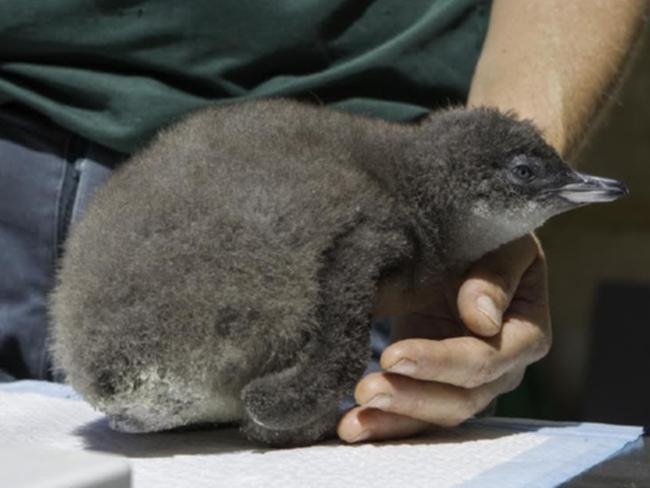

Kyle Yu
The Emperor's Melting Kingdom
Kyle Yu - November 8, 2022

Hargreaves, Peter. "Penguins". Australian Antarctic
Program, 5 Aug. 2021,
https://www.antarctica.gov.au/news/2021/emperor-penguins-face-extinction-risk-from-antarctic-sea-ice-loss/
üêß What are these things?
The Emperor Penguin is what everyone imagines a penguin to look like, an aquatic flightless bird with black feathers on the head and back, a white belly, yellow patches around the ears, and a long sharp beak. They are are the tallest and largest of the 18 penguin species in the world reaching up to 39 inches in length and can weigh anywhere from 49 to 99 pounds.Where they live
Being native to Antarctica, their bodies have evolved to survive in the extreme weather with dense feathers and a thick layer of fat to keep them warm as well as a streamlined body and flipper turned wings to swim in the water. To find their food, they dive into the water to eat fish, krill, crustaceans, and cephalopods. Their predators consist of birds on land and leopard seals and orcas in the water.
How they reproduce
This penguin species in particular is special because they only breed during the winter. At the start of the breeding season (March and April), they go on long treks from 31-75 miles inland from the edge of the pack ice towards colonial nesting areas and have 1 child per year per pair. After laying the egg one parent will stay with it while the other will go out to sea to hunt for food.
Deretsky, Zina. "Penguin Lifecycle". United States
Antarctic Program. 28 June 1905,
https://photolibrary.usap.gov/PhotoDetails.aspx?filename=PENGUIN_LIFECYCLE_H.JPG
{kind=link}
üå°Ô∏è How are they affected by climate change?
Humans have been pumping a substantial amount of carbon emissions into the atmosphere for many decades. In 2020 alone, we put 5,981 million metric tons of carbon dioxide equivalent emissions into the atmosphere. That's like the weight of 6 billion cars in CO2! Who creates these emissions is pretty evenly split across a few economic sectors with the largest being transportation (27%) and electric power (25%). These carbon emissions aren't taken out of the atmosphere as fast as they are put up which creates what's known as a greenhouse effect where the atmosphere traps heat and warms up the planet and is the main driving factor in global climate change and rising temperatures around the world. According to the United States Environtmental Protection Agency, we have taken strides in reducing these emissions by 7% since 1990 compared to 2020's levels but this by no means means that we still shouldn't be worrying about the future.
“Total U.S. Greenhouse Gas Emissions, 1990-2020.” United
States Environmental Protection Agency, 2022,
https://www.epa.gov/system/files/images/2022-04/total-ghg-over-time-2022-caption.png.
{kind=link}
As the global temperature increases due to climate change, Antarctica's ice, the home of the penguins, continues to melt rapidly. According to NASA, Antarctica has been losing 24 cubic miles of ice per year since 2002 and according to the Woods Hole Oceanographic Institution, as much as 60% of the sea ice has been reduced in 30 years with one colony virtually disappearing. Since the penguins rely on the sea ice for long term survival, this would mean less breeding platforms for the penguins and increases the chance of early ice break off before the chicks are ready to go to sea. A study was done by the Woods Hole Oceanographic Institution where they modeled "the projected dynamics of all known emperor penguin colonies under different greenhouse gas emission scenarios" (Australian Antarctic Program). According to this study, under the current emission rates and it's effects on the ice, emperor penguin poplation numbers will diminish slowly until about 2040 and if nothing is done to curve emission rates, they will become quasi extinct by 2100 as 98% of colonies would vanish.
üôå Why are they worth saving?
Ecosystems are delicate balancing games and if one species of the huge food web becomes over/under populated it can lead to echoing effects that break down the whole system. The emperor penguin is a key animal in the antarctic ecosystem, consuming the smaller animals like krill and fish while becoming food for some of the top predators like seals and whales. As their numbers decrease, the changes will slowly affect the rest of the system as the predators that feed on them die of starvation and the krill and fish that the penguins feed on will become overpopulated, shifting the balance of the entire ecosystem.
“ANTARCTIC OCEAN FOOD WEB.” Cool Antarctica, 2020,
https://www.coolantarctica.com/Antarctica%20fact%20file/wildlife/whales/food-web.php.
❤ What we can do to help them
There are many different ways to help prevent the decline of Emperor Penguins in the future and they mostly fall into 3 different catgories:Indirect Solutions
Indirect solutions are solutions that are expensive in terms of time and money but act as a more long term solution to the problem. The most obvious solution of the bunch is to cut the problem at it's source by reducing carbon emissions by cutting out short lived climate pollutants and switching to renewable energy sources.
Some of the more creative solutions focus on fixing Antarctica itself by preventing or slowing it's melt using geoengineering. One proposed solution is to build large sea walls to block warm water from rubbing against the bottom of the glaciers and melting them. Another solution is to use physical supports to prevent the collapse of ice sheets as they melt avoiding a chain reaction effect. One last solution is employ a form of water cooling where a hole is drilled into the ice and cooled brine is pumped to the base of a glacier, cooling it at the core. As you could probably guess, these solutions would cost tens of billions of dollars and tens of billions more to maintain every year. However, the cost might not seem that bad compared to the trillions of dollars it could save by not only protecting Antarctica and it's sea life but also preventing further sea level rise from the melted ice which is a real threat that hundreds of coastal communities and major cities around the world face.

Moore, J. Moore C. “Glacial Geoengineering.” Nature,
2018,
https://www.nature.com/articles/d41586-018-03036-4.
Direct Solutions
Direct solutions are solutions that are much cheaper and faster to implement but are not as effective in the long run. One of these solutions is to limit or close fishing grounds around penguin breeding colonies which would prevent overfishing, leaving more food for the penguins, and preventing the accidental capture of penguins. Another solution is to hand rear chicks which means to save abandoned or orphaned chicks in the wild before they die of starvation and releasing them back once they grow up to the age of a fledgling and can support themselves. Some of these solutions are already being implemented with 7000 hand-reared chicks being saved since 2006 by the Southern African Foundation for the Conservation of Coastal Birds.

AAP. “After Hatching the Penguin Struggled, Forcing the
Zoo to Hand Rear the Chick on Fish Smoothies.” PerthNow,
15 Dec. 2015,
https://www.perthnow.com.au/news/wa/little-penguin-hand-reared-at-perth-zoo-for-breeding-program-ng-d18563036ea443cd27e9fdebc2eb3fc7.
Individual Solutions
Individual solutions are solutions that you and me can start doing right now. It can seem hopeless reducing and sacrificing our reliance on convenient products that are harmful to the environment so it's important to make sure that we are spending our time wisely and efficiently when it comes to reducing carbon emissions. Small things that can add up to make a big difference and don't take much time at all can be as simple as buying from sustainable fisheries, reducing plastic usage with a reusable shopping bag, and recycling more often. A few things that can make a huge impact are electing the right people who will pass laws that work to solve climate change and helping out local environmental groups to get others to join the cause.
Friends of the Sea. “Penguins Endangered.” Friends of
the Sea, 2020,
https://friendofthesea.org/marine-conservation-projects-and-awareness/save-the-penguins/.
üìù References
“Sources of Greenhouse Gas Emissions.” EPA, Environmental Protection Agency, 5 Aug. 2022, https://www.epa.gov/ghgemissions/sources-greenhouse-gas-emissions.“Emperor Penguins Face Extinction Risk from Antarctic Sea Ice Loss.” Australian Government - Department of Climate Change, Energy, the Environment and Water: Australian Antarctic Division | Australian Antarctic Program, 5 Aug. 2021, https://www.antarctica.gov.au/news/2021/emperor-penguins-face-extinction-risk-from-antarctic-sea-ice-loss/.
“Is Antarctica Melting? - Climate Change: Vital Signs of the Planet.” NASA, NASA, 16 Sept. 2014, https://climate.nasa.gov/news/242/is-antarctica-melting/.
“Emperor Penguins.” Woods Hole Oceanographic Institution, 3 Aug. 2021, https://www.whoi.edu/know-your-ocean/ocean-topics/ocean-life/sea-birds/emperor-penguins/.
“Save the Penguins: Campaign to Save the World's Penguin - Fos.” Friend of the Sea, 29 Apr. 2022, https://friendofthesea.org/marine-conservation-projects-and-awareness/save-the-penguins/.
Moore, John C., et al. “Geoengineer Polar Glaciers to Slow Sea-Level Rise.” Nature News, Nature Publishing Group, 14 Mar. 2018, https://www.nature.com/articles/d41586-018-03036-4.